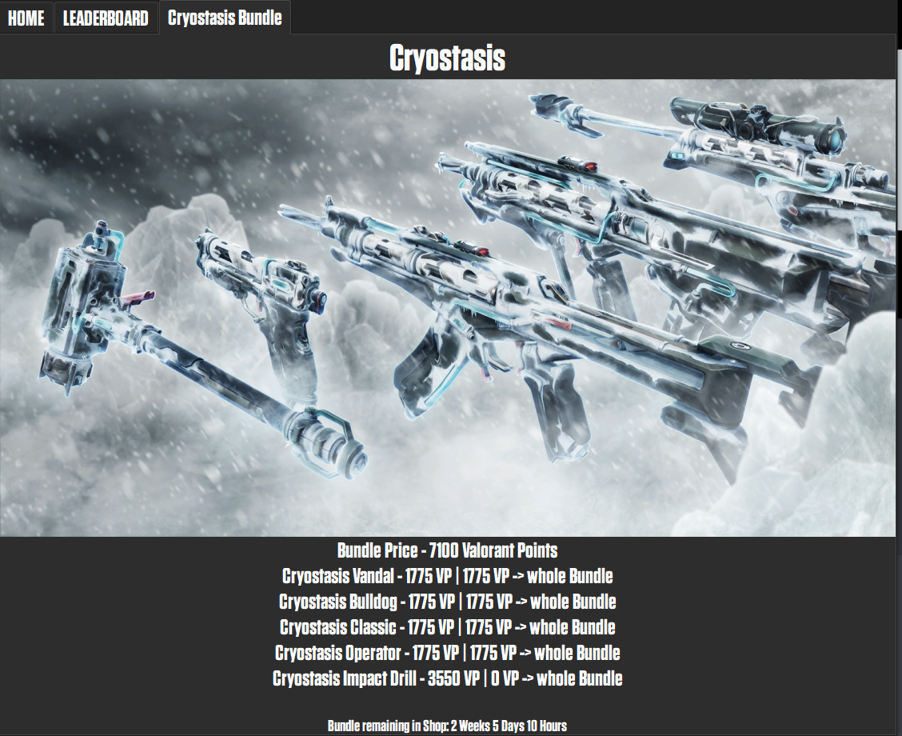

Valorant Tracker is a program that has almost the same features as BLITZ or TRACKER.GG
You can get a player's account level, their current rank with MMR and RR.
You can see his headshot rate, winrate and average K.D of the last 10 matches.
There is also a function where you can get match details from a match!
You have a complete view of the previous ranks of the old episodes and acts and a match history of the last 10 matches.
If you dont like the Light mode you can easily switch to Dark mode with clicking on a button.
Valorant Tracking also has a LEADERBOARD function where you can almost every player in the leaderboard.
You can see his rank, rr and his currently placing!
(Reminder: Sometimes you can't get all players because the api has problems with the leaderboard sometimes. That means you only can up to 1000 persons sometimes!)

This function of the tracker allows you to see all current bundles in Valorant, no matter how many bundles there are!
This last function is showing you almost all details about a match like all kills of a player, deaths of all players, headshotrate, ranks of them and other things! (CURRENTLY IN DEVELOPEMENT AND BETA)!
CREDITS
This project is not affiliated with, nor endorsed by, RIOT GAMES.
Riot Games and all related property rights are trademarks or registered trademarks of Riot Games, Inc. Notwithstanding efforts to comply with Riot's API Rules.
You acknowledge that use of this software is at your own risk.
Other credits are going to HENRIKDEV, who made the API for VALORANT. You can use this API too to make stuff like this Tracker i made!